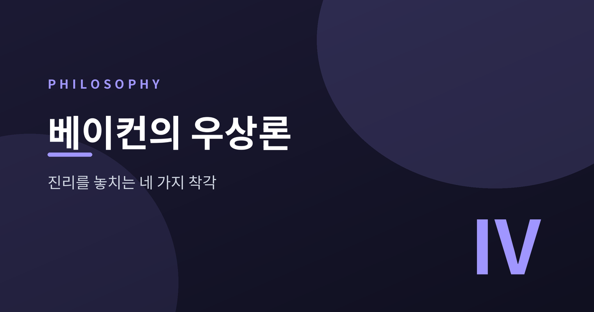
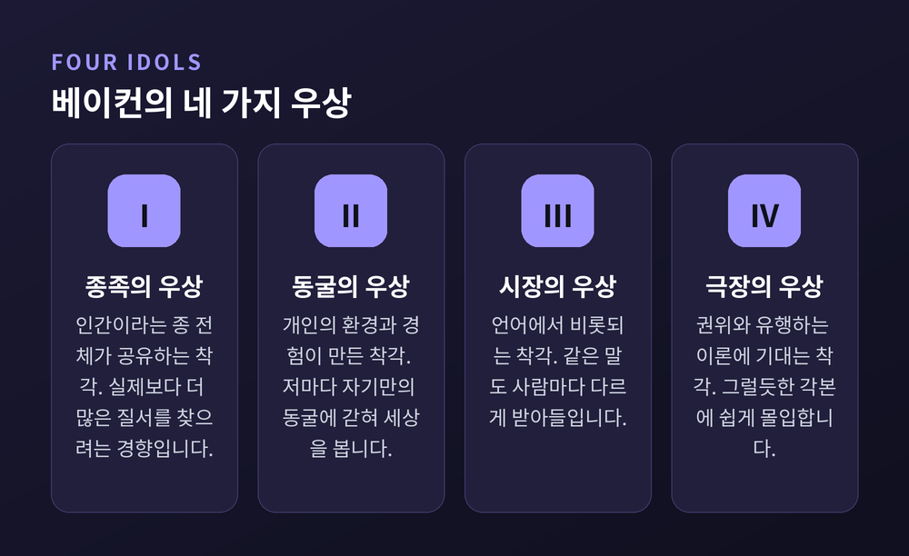
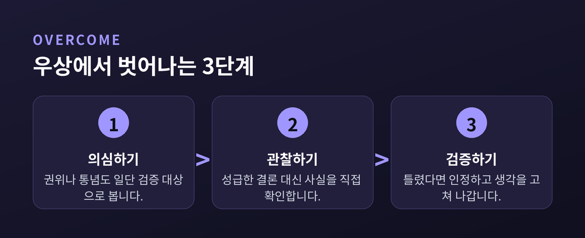

[철학/인문] 베이컨의 우상론 — 인간이 진리를 놓치는 네 가지 착각

오늘은 프랜시스 베이컨의 우상론에 대해 이야기해 보려 합니다. 베이컨은 인간이 진리에 다가가지 못하는 이유를 네 가지 착각, 즉 우상에서 찾았습니다. 이 개념은 17세기에 나왔지만 확증편향이나 SNS 시대의 정보 편식을 설명할 때도 여전히 쓸모가 있습니다.
- 베이컨은 1620년 저서 『노붐 오르가눔』에서 네 가지 우상을 제시했습니다.
- 종족의 우상, 동굴의 우상, 시장의 우상, 극장의 우상으로 나뉩니다.
- 각각 인간 본성, 개인 경험, 언어, 권위에서 비롯되는 착각입니다.
종족의 우상과 동굴의 우상 — 나라서, 인간이라서 생기는 착각
종족의 우상은 인간이라는 종 전체가 공유하는 착각입니다.
사람은 실제보다 더 많은 질서와 규칙을 세상에서 찾아내려는 경향이 있습니다.
없는 패턴을 있다고 믿고, 예외는 슬쩍 넘기는 식입니다.
확증편향이라는 이름으로 지금도 자주 언급되는 현상입니다.
동굴의 우상은 개인마다 다르게 갇혀 있는 착각입니다.
베이컨은 이를 각자의 동굴 안에 갇혀 세상을 본다고 표현했습니다.
자라온 환경, 배운 지식, 직업이 저마다 다른 렌즈를 만듭니다.
같은 사건을 보고도 사람마다 다르게 해석하는 이유입니다.
예전에는 이 두 우상이 개인의 사고방식 문제로 그쳤습니다.
지금은 알고리즘이 그 착각을 증폭시키는 구조로 바뀌었습니다.
이미 믿는 것과 비슷한 정보만 반복해서 만나기 때문입니다.
예를 들어 어떤 뉴스를 검색하면, 그다음부터 비슷한 논조의 기사가 계속 추천됩니다.
반대되는 시각은 점점 화면 밖으로 밀려납니다.
결국 내가 옳다고 믿는 근거만 쌓이고, 그 믿음은 더 단단해집니다.
정작 세상은 그렇게 단순하지 않은데도 말입니다.

시장의 우상 — 언어가 만드는 함정, SNS 시대의 착각
시장의 우상은 언어에서 비롯되는 착각입니다.
베이컨은 사람들이 시장에서 물건을 사고팔듯 말을 주고받는다고 보았습니다.
문제는 말이 언제나 정확한 뜻을 그대로 전달하지는 않는다는 점입니다.
같은 단어를 두고도 사람마다 다른 그림을 떠올립니다.
SNS 시대에는 이 우상이 더 빠르게, 더 넓게 퍼집니다.
짧은 문장과 자극적인 표현이 정확한 설명보다 더 잘 퍼지기 때문입니다.
맥락이 잘린 채 옮겨진 말 한마디가 원래 뜻과 다르게 소비되기도 합니다.
필터버블이나 에코체임버라는 말도 결국 이 시장의 우상과 닿아 있는 셈입니다.
댓글창을 보면 같은 단어를 두고도 서로 다른 뜻으로 쓰다가 다투는 경우가 흔합니다.
정작 서로 하려는 말은 크게 다르지 않은데도 그렇습니다.
말을 쓸 때는 그 말이 실제로 무엇을 가리키는지 한 번 더 확인해 볼 필요가 있습니다.
극장의 우상 — 권위와 유행하는 이론에 기대는 착각
극장의 우상은 권위나 유행하는 이론을 무비판적으로 따르는 착각입니다.
베이컨은 기존 철학 체계도 결국 무대 위 각본과 다르지 않다고 보았습니다.
그럴듯하게 짜인 이야기일수록 관객은 쉽게 몰입합니다.
전문가의 말, 유명한 이론, 오래된 통념이 모두 이 우상의 재료가 됩니다.
지금도 다르지 않습니다.
그럴듯한 논리 구조나 유명인의 발언이 사실 검증보다 앞서는 경우가 많습니다만, 정작 근거를 물으면 답이 궁색한 경우도 적지 않습니다.
"권위 있는 사람이 그렇게 말했다"는 것 자체는 근거가 되지 않습니다.
베이컨이 강조한 처방은 단순합니다.
직접 관찰하고, 반복해서 검증하고, 틀렸으면 고치는 태도입니다.
화려한 각본보다 더디더라도 확인된 사실 하나가 낫다는 뜻입니다.
이 세 번째 우상까지 알고 나면 남는 질문은 하나입니다.
그렇다면 이 착각들에서 우리는 어떻게 벗어날 수 있을까요.

정리하면 이렇습니다.
베이컨의 우상론은 특정 진영을 겨누는 이야기가 아닙니다.
인간이라면 누구나 걸리는 네 가지 착각의 구조를 보여줄 뿐입니다.
물론 이 네 가지를 안다고 해서 착각에서 완전히 자유로워지지는 않습니다.
다만 스스로를 의심하는 습관 하나는 분명히 남습니다.
"진리를 가로막는 것은 대개 바깥이 아니라 내 안의 우상이다" — 이 한 문장이 베이컨 우상론의 핵심입니다.
오늘 내가 확신하는 것 중 몇 개가 사실은 우상일지, 한 번쯤 되짚어 보시면 좋겠습니다.